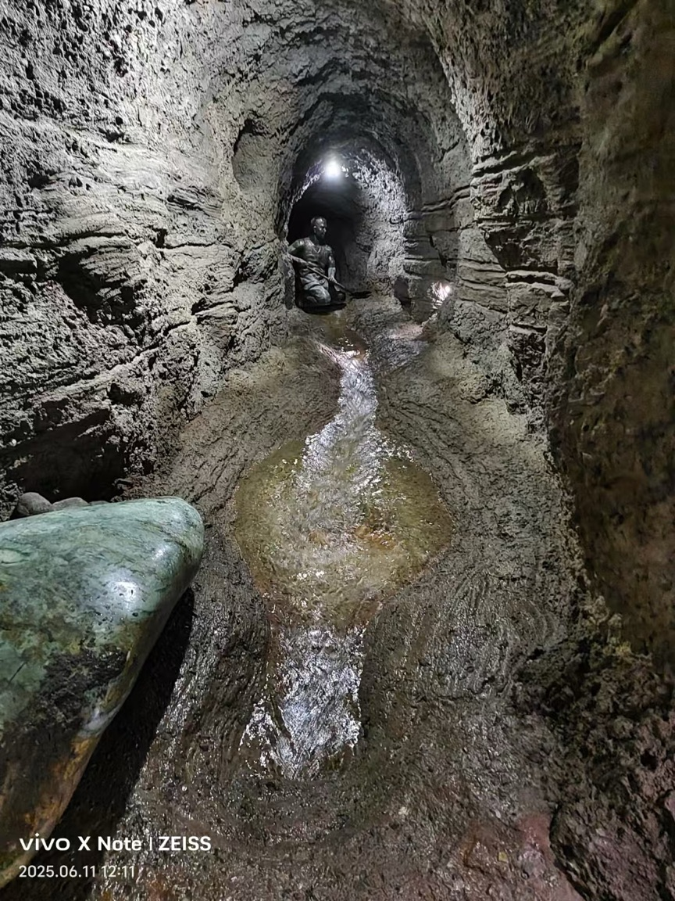

作者：朱語熙
暑假期間，我沿著絲綢之路從河西走廊一路來到吐魯番，第一次親眼見到坎兒井。吐魯番炎熱少雨，夏季氣溫可達四十二度，火焰山更高達五十多度。在如此乾旱酷熱的環境中，卻能盛產聞名全國的葡萄，關鍵就在於坎兒井所引入的灌溉水源。
走進坎兒井景區，我搭乘電梯深入地下暗渠，濕潤涼爽的空氣撲面而來，耳邊伴隨著潺潺水聲。清澈的水流在暗渠中靜靜前行，先民巧妙利用地勢高差，將天山融雪引入農田，同時大幅減少水分蒸發，令人由衷敬佩其智慧。
沿途每隔數十公尺便可見一口豎井，用於運土、通風與採光。兩千多年前，掘井人必須在昏暗油燈下跪地挖掘，長年忍受酷暑嚴寒，歷經數代人的犧牲與付出，才造就這項奇蹟般的水利工程。
然而，坎兒井如今也面臨年久失修與自然、人為破壞的威脅。我期盼相關單位能加強修繕與環境監測，讓這項中國獨一無二的工程得以永續保存。同時，也希望透過更完善的旅遊規劃，讓更多人深入了解坎兒井背後的歷史與價值。
作為新疆勞動人民智慧與勤勞的結晶，坎兒井不僅是珍貴的文化遺產，更是中華民族共同的寶藏。這片西域土地孕育了豐富多元的文化與地貌，值得被更多人看見與珍惜。